已到货 ×1
3S 6000mAh 电池组
标签标注 11.1V 标称、12.6V 最高，T 型放电口；未标明电芯并联结构。
当前方案采用 MaixCAM2 4GB + 2K OS04D10 前视识别、已到货的八路下视循线模块和 NUCLEO-F446RE 实时控制。循线板与稳压板的具体型号、接口及输出仍待拆封核对；动力部件已到货，接线和参数尚未验证。
MaixCAM2 4GB + 2K OS04D10 负责前向视觉；已到货的八路模块用于近地循迹，但实物型号和接口待核；SEN0628 是后续待购的 8×8 ToF。F446RE 读取编码器并控制左右电机。
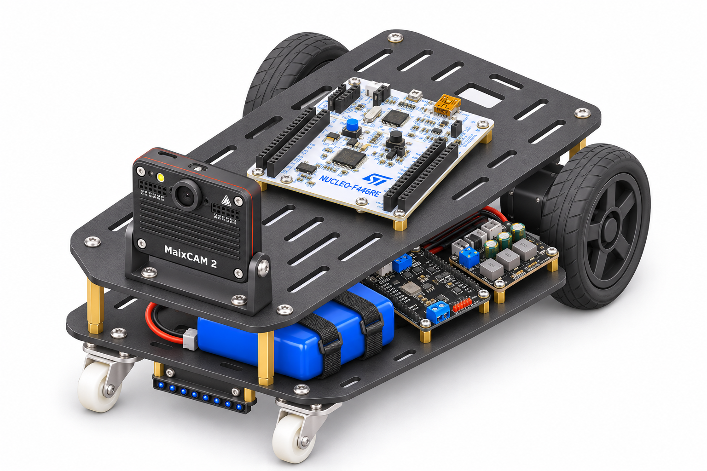
概念图用于展示模块位置，不是最终 CAD。传感器、驱动和电机的图片外观为示意；采购前核对具体规格，组装后复核车宽、视野和走线。
黑色细带表示 20 mm 循迹线。绿色半透明荧光高亮表示路线识别结果，沿黑线中心显示，不绕障碍。自由纪念塔模型挡住黑线并落在两条青色车宽边界之间，表示继续直行会碰撞。
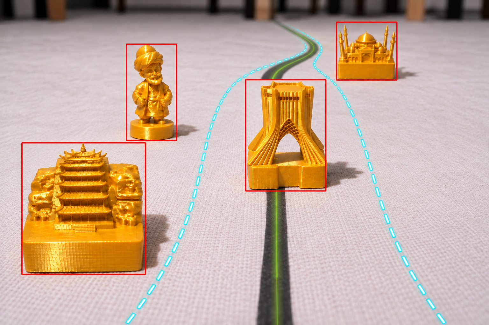
这是根据规则障碍物照片生成的单张模拟画面，不是实时识别结果。绿色仅表示黑线中心的路线识别高亮，不表示避障规划；障碍物进入两条青线之间表示直行存在碰撞风险。图中比例仅作说明，实车需按本车外宽、相机视角和安全余量重新标定。
装配图按你给的双层底盘实物结构更新：上层板放 NUCLEO-F446RE 和前视 MaixCAM2；中层放 3S 电池、AT8236 双路电机驱动板和 MP2491C 稳压模块；八路循线阵列位于底盘中心下方、感应面朝地。底盘外形和安装孔仍需按实物复核。
主图使用平行等轴测投影，保持上下层板平行；相机和一对小万向轮在前端，两只大驱动轮在后端同轴。图用于核对结构和部件上下层关系，不是 CAD 加工图；实物孔位、支架高度、线束固定和比赛外廓仍需按到货底盘复核。
正视、俯视和侧视共用同一双层布局：主控与相机在上层，电池和驱动稳压模块在中层，循线阵列在车底中央。
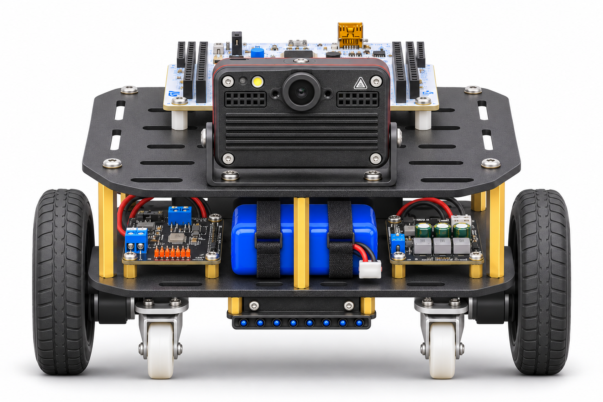
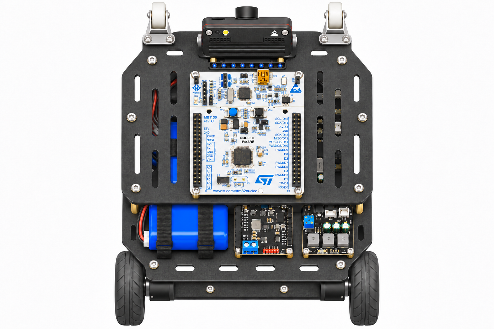

橙色 A / B 是底盘俯视截图中估出的候选孔，蓝色 1 / 2 是 NUCLEO 板上的两只固定孔。点击图片可以放大。
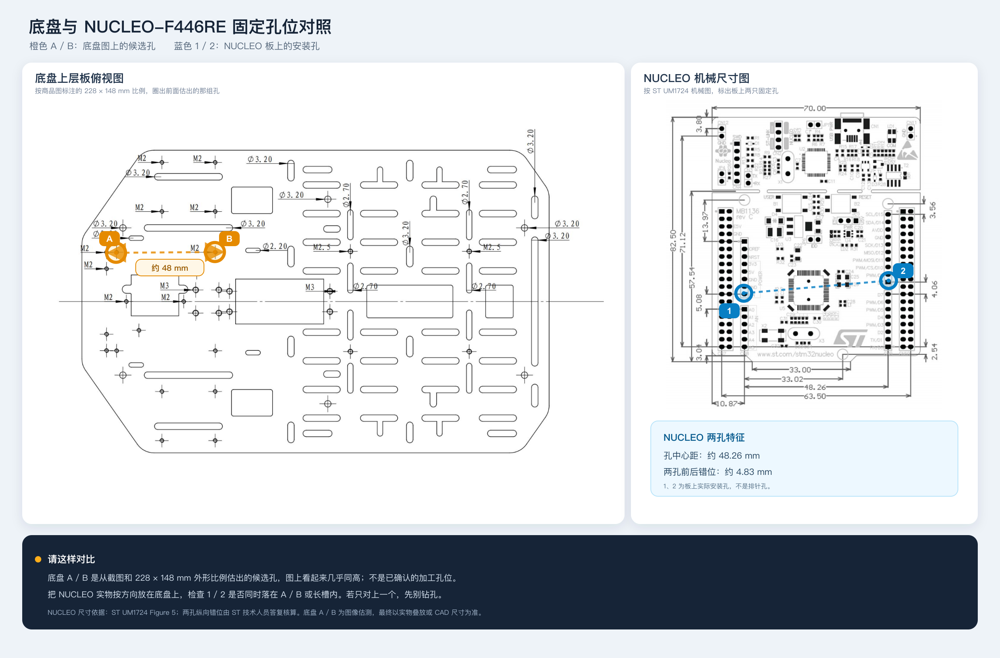
A / B 是从底盘截图和 228 × 148 mm 外形比例估出的候选点，不是已确认的加工孔位。将 NUCLEO 实物按方向放到底盘上，确认 1 / 2 能否同时落在候选孔或长槽内；只对上一个时先不要钻孔。
清单区分“已购 / 已有 / 已到货 / 待核 / 待补齐”。本批照片只能确认包装标签和可见数量；型号、接口、电平及电源输出以拆封后的实物丝印和测量结果为准。
| 序号 | 部件 / 数量 | 建议规格 | 用途与核对项 | 状态 |
|---|---|---|---|---|
| 1 | 视觉相机 ×1 | MaixCAM2 · 4GB + OS04D10 2K | 前向路线与障碍物识别；按商家标称 5V/1A，计划由确认过的稳压模块固定 5V 经 USB-C 供电引线供电。 | 已购 |
| 2 | 主控板 ×1 | NUCLEO-F446RE | 编码器采集、电机闭环、避障动作；计划由确认过的稳压模块 VADJ 设约 7.5V 后接 VIN（CN7-24）。 | 已有 |
| 3 | 传感器扩展板 ×1 | DFRobot Gravity IO | 可作传感器接线转接；本页按 NUCLEO 针脚直接分配。若要让信号先接入扩展板，需按你手中板型核对接口和电平。 | 已有 |
| 4 | 多区 ToF ×1 | DFRobot SEN0628 · VL53L7CX · 8×8 | 提供距离和左右分区信息，配合相机判断障碍物位置；未列入本批采购。 | 后续待采购 |
| 5 | 下视循迹模块 ×1 | 包装标注“八路巡线模块”；具体型号待核 | 照片确认八路板到货，但未见 YB-MUX04-2.0 型号。需核对板上丝印、供电电压、接口针序、UART/I²C 协议与信号电平后再接线。 | 已到货 · 待核型号 |
| 6 | 520 编码减速电机 ×2 | 包装标注 1:56、520 减速电机（带码盘） | 额定电压、编码器每圈计数和堵转电流未出现在到货标签中，需看电机铭牌或实测；照片另见 65mm 轮胎、固定支架及 6mm 孔联轴器。 | 已到货 · 参数待核 |
| 7 | 双路电机驱动板 ×1 | AT8236 模块带稳压版 · VM 5–17V | 包装标签确认 AT8236 带稳压版本；开箱后仍需核对端子丝印和板上版本。规划规格为每路 3A 连续、6A 峰值，接收 3.3V 控制信号。 | 已到货 |
| 8 | 车载电池组 ×1 | 标签：6000mAh · 11.1V 标称 / 12.6V 最高 | 标签还标注额定电流 6A、最大放电 10A、截止放电 8.1V、T 型放电口、DC4.0×1.7 充电口。标签未说明 2P 结构；保护板和均衡功能仍需核实。 | 已到货 |
| 9 | 配套充电器 ×1 | GPDA3L-12602000C · 输出 12.6V / 2A | 照片标签标注 DC4.0×1.7 输出；使用前核对与电池充电口匹配，并按电池卖家说明充电。 | 已到货 |
| 10 | 可调稳压模块 ×1 | 包装标注“可调稳压电源模块”；计划核对 MP2491C | 照片未显示芯片和端子规格，不能仅凭包装认定为 MP2491C / YB-MVP01-V1.0；拆封后核对型号、输入范围和各路输出，再决定供电分配。 | 已到货 · 型号待核 |
| 11 | 5V 相机供电线 ×1 | 稳压板固定 5V → USB-C 5V 输入 | 本批照片未见该线；需要带 USB-C 电源识别/CC 电阻的固定 5V 供电引线，不用输出 9V 的 PD 触发线。 | 本批照片未见 |
| 12 | 电源 / 机械安装辅件 | 照片见 T 型电源线、65mm 轮胎 ×2、520 支架 ×2 包、6mm/L18mm 联轴器 ×2、螺丝铜柱包 | 轮胎、支架、联轴器和线束均已拍照登记；T 型线图片可见 3 包，实物数量待点数。总开关、保险丝与座、后万向轮等本批照片未见。 | 部分到货 |
| 13 | 电源扩展板 ×1 | 外包装标注“机器人稳压电源扩展板” | 照片未显示板上型号、端子和用途；与可调稳压模块的关系待开箱确认，确认前不纳入接线方案。 | 已到货 · 用途待核 |
照片已存入 figure/arrivals_20261114/。每张缩略图可点开原图；到货记录只依据包装标签和可见数量，不代表已经安装、通电或完成性能测试。
标签标注 11.1V 标称、12.6V 最高，T 型放电口；未标明电芯并联结构。
铭牌型号 GPDA3L-12602000C，输出 12.6V / 2A，标签写 DC4.0×1.7。
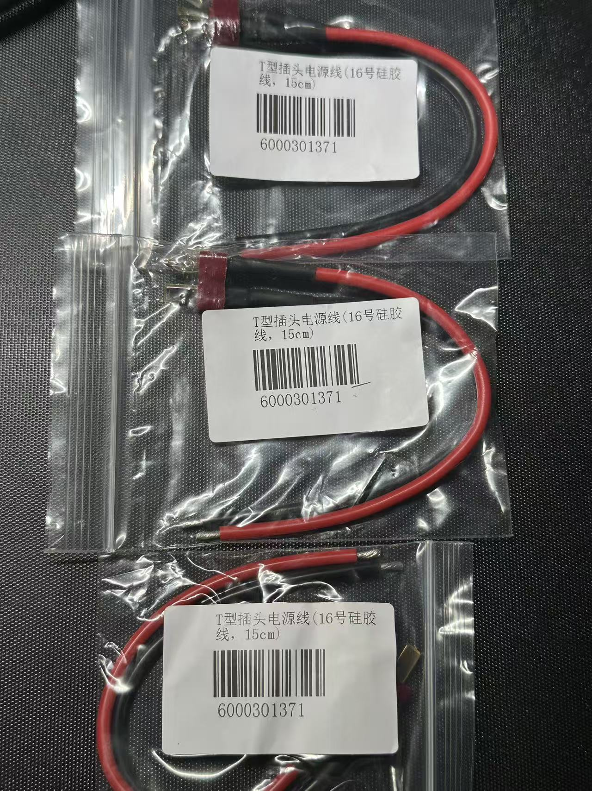
包装标注 16 号硅胶线、15cm；这是电池电源线，不是相机 USB-C 5V 供电线。
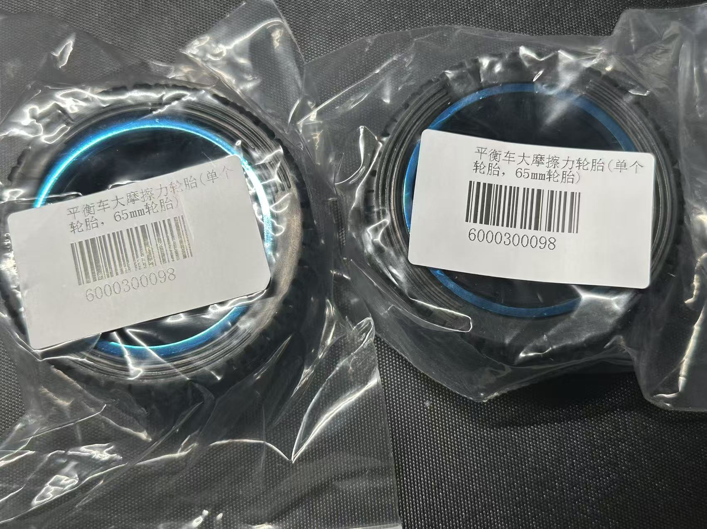
包装标签为平衡车大摩擦力轮胎，65mm。

包装标注“机器人稳压电源扩展板”；板上型号、端口和功能需开箱确认。

包装标注“AT8236 模块带稳压版”；到手后核对板上端子和版本。
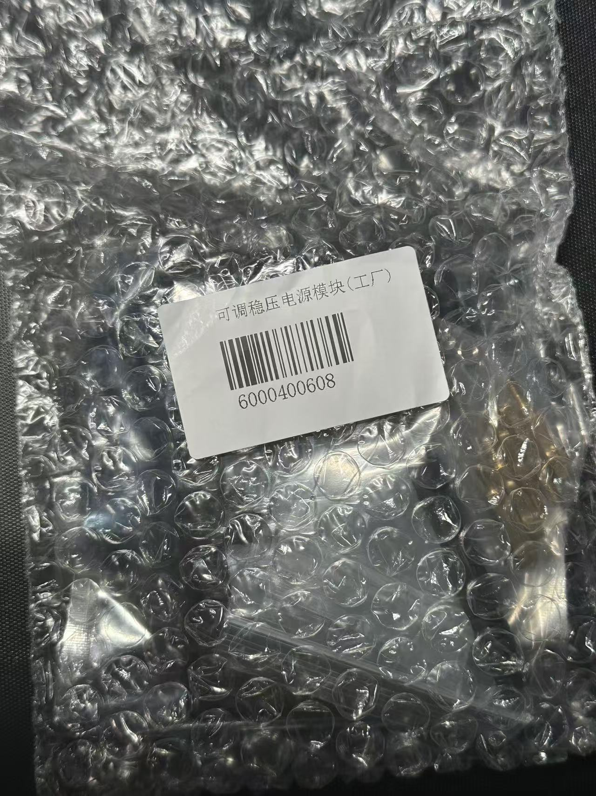
包装为通用描述；拆封核对芯片型号、输入范围及 VADJ、5V、3.3V 输出端子。
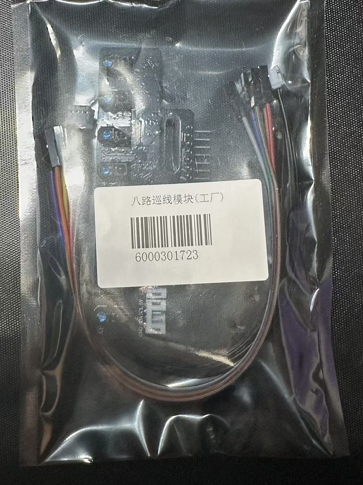
包装只标“八路巡线模块”；开箱核对板上型号、插口针序、供电与通信协议。
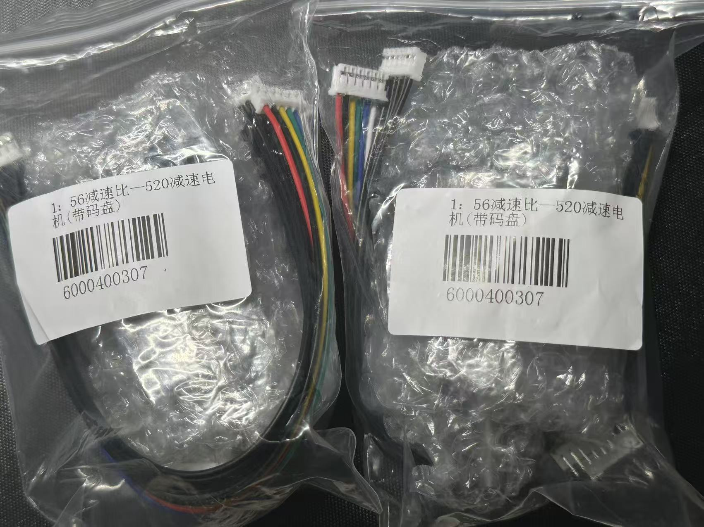
包装标注 1:56、520 减速电机（带码盘）；额定电压、编码器计数和堵转电流需核对。
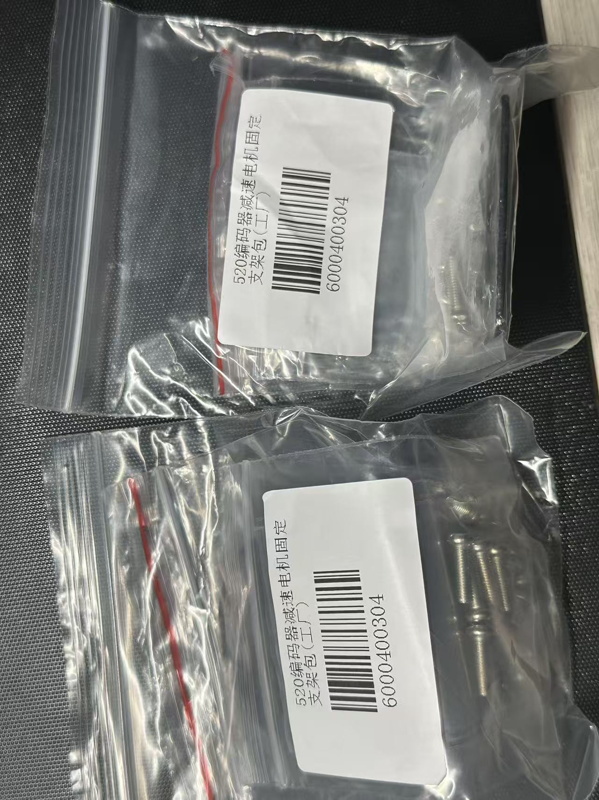
包装标签为 520 编码减速电机固定支架包；拆包后核对螺丝数量和孔位。

包装标签为循线模块螺丝铜柱包；螺纹规格和数量待拆包清点。

标签标注 6mm 孔、18mm 长；拆包后核对电机轴和轮毂的配合。
相机 UART、AT8236 控制输入和编码器已按器件规划针脚。八路巡线模块的包装未标型号，表中的 UART 针脚仅作预留；确认实物接口、供电和电平前不要接入。
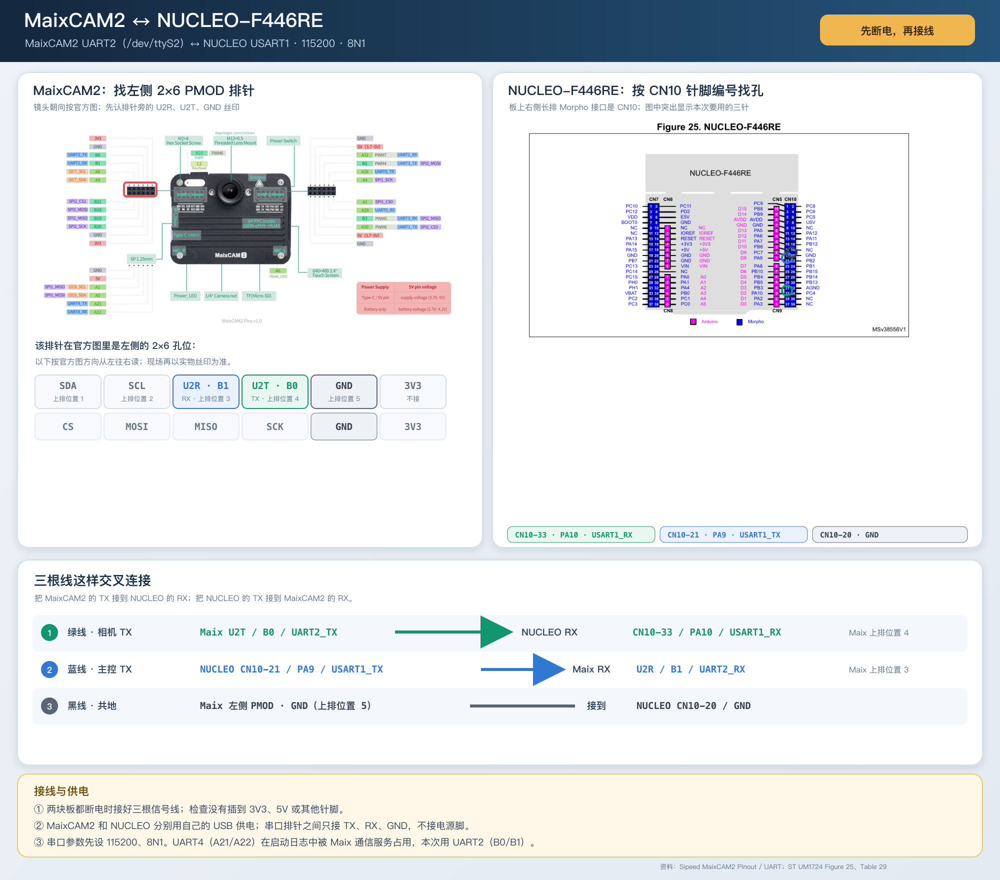
首次台架连接先只接这三根线：MaixCAM2 U2T → NUCLEO CN10-33，NUCLEO CN10-21 → MaixCAM2 U2R，GND → GND。两块板先断电，接好后分别用 USB 供电；车上运行时再按单电池供电方案接电。
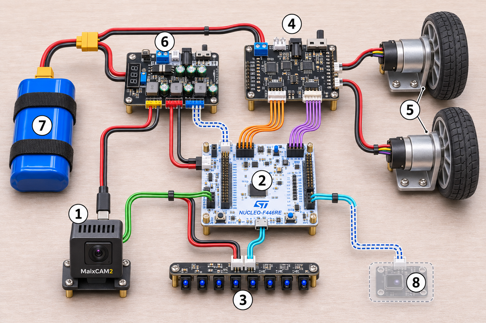
先用下方编号和线色找到模块、辨认线束，再按后面的针脚表接线。图中稳压板按原计划的 MP2491C 绘制，本批到货模块型号尚未确认；图像只用于显示计划线束关系，接线前以实物丝印和输出实测为准。
| 模块端 | NUCLEO 信号 | 板上针脚 / 别名 | 连接说明 |
|---|---|---|---|
| MaixCAM2 U2T / B0 · UART2_TX | PA10 · USART1_RX | CN10-33 | TX → RX；相机上排位置 4 |
| MaixCAM2 U2R / B1 · UART2_RX | PA9 · USART1_TX | CN10-21 | 主控 TX → 相机 RX；相机上排位置 3 |
| MaixCAM2 PMOD · GND | GND | CN10-20 | GND 共地；相机上排位置 5 |
| 八路模块 UART_TX（待核） | PC11 · USART3_RX | CN7-2 · Morpho | 仅作预留；核对实物手册后再接 |
| 八路模块 UART_RX（待核） | PC10 · USART3_TX | CN7-1 · Morpho | 仅作预留；核对实物手册后再接 |
MaixCAM2 用 UART2（B0 TX、B1 RX，设备端口为 /dev/ttyS2）连接 NUCLEO 的 USART1。你发来的启动日志显示 A21/A22 的 UART4 正由 Maix Comm Protocol 监听，因此这次避开 UART4。八路模块包装未标具体型号，USART3 的 PC10/PC11 目前只是预留针脚；接线前先核对模块说明书、插座针序、通信协议和 3.3V 电平兼容性。
| AT8236 控制端 | NUCLEO 信号 | 板上针脚 / 定时器 | 用途 |
|---|---|---|---|
| AN1 / AIN1（左轮） | PC6 | CN10-4 · TIM8_CH1 | 电机 A 输入 1 |
| AN2 / AIN2（左轮） | PC7 | CN10-19 · CN5 D9 · TIM8_CH2 | 电机 A 输入 2 |
| BN1 / BIN1（右轮） | PC8 | CN10-2 · TIM8_CH3 | 电机 B 输入 1 |
| BN2 / BIN2（右轮） | PC9 | CN10-1 · TIM8_CH4 | 电机 B 输入 2 |
四路由 TIM8 控制，AT8236 采用双输入 H 桥控制。VM 接 3S 电池正极支路，GND 接电池负极；控制信号用 3.3V。AT8236 板载 5V/3.3V 输出不要与 MP2491C 对应电源轨并联。
| AT8236 / 电机端 | NUCLEO 信号 | 板上针脚 / 定时器 | 备注 |
|---|---|---|---|
| Motor-A / 左电机 E1A | PA0 · TIM2_CH1 | CN7-28 · CN8 A0 | 左编码器 A |
| Motor-A / 左电机 E1B | PA1 · TIM2_CH2 | CN7-30 · CN8 A1 | 左编码器 B |
| Motor-B / 右电机 E2A | PA6 · TIM3_CH1 | CN10-13 · CN5 D12 | 右编码器 A |
| Motor-B / 右电机 E2B | PA7 · TIM3_CH2 | CN10-15 · CN5 D11 | 右编码器 B |
每个 6pin 电机插头接 AT8236 对应 Motor-A / Motor-B 插座；驱动板的 E1A/E1B、E2A/E2B 信号再接 NUCLEO。按电机插头丝印确认极性与顺序；编码器由 AT8236 的 3.3V 逻辑供电，信号地共地。
| 模块信号 | STM32 端口 | NUCLEO 物理针脚 | 连接 |
|---|---|---|---|
| UART_TX | PC11 · USART3_RX | CN7-2 · Morpho | 交叉连接 |
| UART_RX | PC10 · USART3_TX | CN7-1 · Morpho | 交叉连接 |
| 5V | — | MP2491C 固定 5V 输出 | 传感器供电 |
| GND | GND | 与 NUCLEO / 电池负极共地 | 逻辑参考地 |
包装标签只确认“八路巡线模块”，没有确认 UART 或 I²C 能力。表格中的 PC10/PC11 和 5V 是待核规划，不是已验证接线；先看 PCB 丝印和随附资料，再确定供电、接口针序和信号电平。
| ToF 信号 | STM32 端口 | NUCLEO 物理针脚 | 说明 |
|---|---|---|---|
| SCL | PB8 · I2C1_SCL | CN10-3 · D15 | I²C 时钟 |
| SDA | PB9 · I2C1_SDA | CN10-5 · D14 | I²C 数据 |
| VCC | — | MP2491C 固定 3.3V | 按 SEN0628 模式开关设置为 I²C |
| GND | GND | 公共地 | 地址与总线速率按模块资料确认 |
SEN0628 不在本批采购清单中；接线表先保留，买到模块后再按实物开关位置和接口版本复核。
NUCLEO 物理针脚根据 ST UM1724 的 NUCLEO-F446RE 引脚表更新。TIM8 用于 AT8236 四路控制，TIM2/TIM3 用于左右编码器，USART1/USART3 分别连接相机和循线模块，PB8/PB9 保留给 ToF I²C。
电池标签确认 11.1V 标称、12.6V 最高。原计划是电池经保险丝和开关直供 AT8236 VM，再由 MP2491C 输出 7.5V、5V 和 3.3V；但本批稳压模块型号和输出尚未确认，因此图示仍是计划方案，不能按图直接接电。

这是原计划供电图，不代表到货后的实物接法。先辨认稳压模块和扩展板，再用万用表确认输出；保险丝与主线规格按电机启动电流、电池保护板、电线和接插件额定值核定。